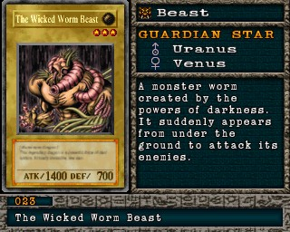

#023 · Monstro
The Wicked Worm Beast
ATK1400
DEF700
Nível3
TipoBesta
AtributoEarth
Guardian StarsUrano / Vênus
Senha6285791
Star Chips60
Quem dropa no Mod 13
| Duelista | Rank | Chance | Média | |
|---|---|---|---|---|
| B/C/D | 8,50% 174/2048 | 1 em 12 duelos | ||
| S/A-POW | 6,84% 140/2048 | 1 em 15 duelos | ||
| S/A-TEC | 4,88% 100/2048 | 1 em 20 duelos | ||
| B/C/D | 3,91% 80/2048 | 1 em 26 duelos | ||
| S/A-POW | 3,12% 64/2048 | 1 em 32 duelos | ||
| B/C/D | 2,15% 44/2048 | 1 em 47 duelos | ||
| S/A-POW | 1,66% 34/2048 | 1 em 60 duelos | ||
| B/C/D | 1,27% 26/2048 | 1 em 79 duelos | ||
| S/A-POW | 1,07% 22/2048 | 1 em 93 duelos | ||
| S/A-TEC | 1,07% 22/2048 | 1 em 93 duelos | ||
| B/C/D | 0,78% 16/2048 | 1 em 128 duelos | ||
| S/A-POW | 0,73% 15/2048 | 1 em 137 duelos | ||
| S/A-POW | 0,73% 15/2048 | 1 em 137 duelos | ||
| S/A-POW | 0,68% 14/2048 | 1 em 146 duelos | ||
| S/A-TEC | 0,68% 14/2048 | 1 em 146 duelos | ||
| S/A-POW | 0,68% 14/2048 | 1 em 146 duelos | ||
| S/A-POW | 0,59% 12/2048 | 1 em 171 duelos | ||
| S/A-TEC | 0,59% 12/2048 | 1 em 171 duelos | ||
| B/C/D | 0,59% 12/2048 | 1 em 171 duelos |
Quem dropa no jogo original
| Duelista | Rank | Chance | Média | |
|---|---|---|---|---|
| B/C/D | 8,50% 174/2048 | 1 em 12 duelos | ||
| S/A-POW | 6,84% 140/2048 | 1 em 15 duelos | ||
| S/A-TEC | 4,88% 100/2048 | 1 em 20 duelos | ||
| B/C/D | 3,91% 80/2048 | 1 em 26 duelos | ||
| S/A-POW | 3,12% 64/2048 | 1 em 32 duelos | ||
| B/C/D | 2,15% 44/2048 | 1 em 47 duelos | ||
| S/A-POW | 1,66% 34/2048 | 1 em 60 duelos | ||
| B/C/D | 1,27% 26/2048 | 1 em 79 duelos | ||
| S/A-POW | 1,07% 22/2048 | 1 em 93 duelos | ||
| S/A-TEC | 1,07% 22/2048 | 1 em 93 duelos | ||
| B/C/D | 0,78% 16/2048 | 1 em 128 duelos | ||
| S/A-POW | 0,73% 15/2048 | 1 em 137 duelos | ||
| S/A-POW | 0,73% 15/2048 | 1 em 137 duelos | ||
| S/A-POW | 0,68% 14/2048 | 1 em 146 duelos | ||
| S/A-TEC | 0,68% 14/2048 | 1 em 146 duelos | ||
| S/A-POW | 0,68% 14/2048 | 1 em 146 duelos | ||
| S/A-POW | 0,59% 12/2048 | 1 em 171 duelos | ||
| S/A-TEC | 0,59% 12/2048 | 1 em 171 duelos | ||
| B/C/D | 0,59% 12/2048 | 1 em 171 duelos |
A chance vale por duelo vencido com o rank indicado. "1 em N" é a média de duelos para conseguir a carta. S/A-POW = vitória por força; S/A-TEC = vitória técnica; B/C/D = ranks baixos.